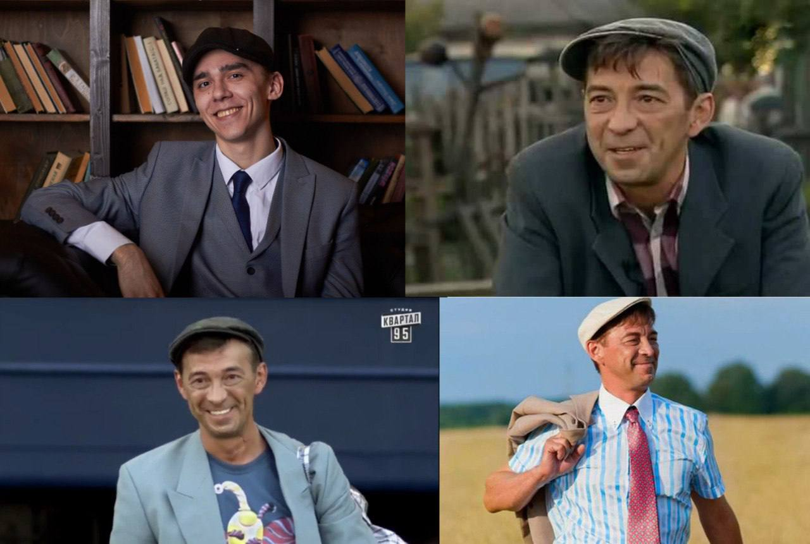

Денис GAZутдинов
MIDDLE Demiddle & EMOTIONAL DAMAGE
Я
Цель
Получение позиции Middle Demiddle с уровнем заработной платы от 120 000 000 рублей, где я смогу применить свой многолетний ПОПЫТ, креативный подход и технические навыки для создания впечатляющих ВООБРАЖАЕМЫХ продуктов и решения сложных НЕСУЩЕСТВУЮЩИХ задач.
Образование
ДА
Навыки
Языки:
- Кошачий - родной
- Матершинный — C1 (Проффесиональный) – готовность совершенствовать для работы на стройке
- Мемный — C2 (Проффесиональный)
Обо мне (Личный профиль)
Ленивый и вечно прокрастинирующий алкоголик и главный герой новостей и программы "Беременна в 16" с более чем 77-летним опытом в создании визуального контента и развитии цифровых проектов. Моя страсть – игры под пиво и ругань с женой.
Я постоянно лижу. Активно использую такие инструменты как Извинения, манипуляции, жалость к себе и другие для повышения продуктивности и поиска новых креативных подходов.
Навыки перепрограммирования мозга. Также создание приложения с рецептами коктейлей или личный секретарь дополняют мой технический арсенал.
Магистерская программа по «Джейдайству» расширяет мой кругозор и позволяет глубже понимать взаимодействие человека с визуальным пространством.
В работе ценю отсутствие задач, возможность отдыха, демореализации и профессионального отрицательного роста. Ищу команду, где смогу внести свой вклад в создание мемных проектов и развиваться вместе с ней.